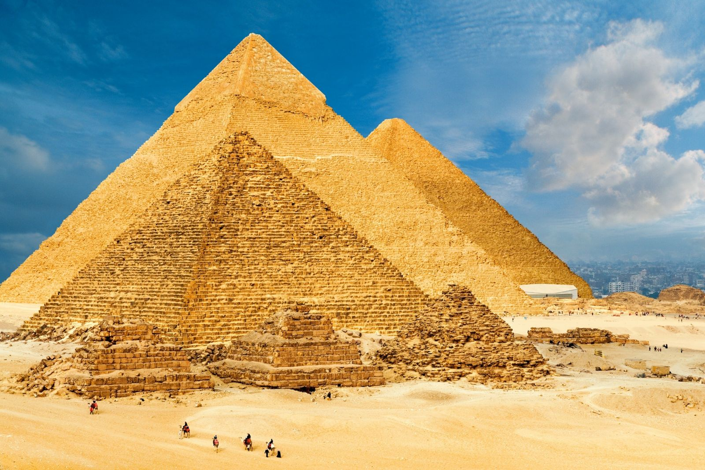
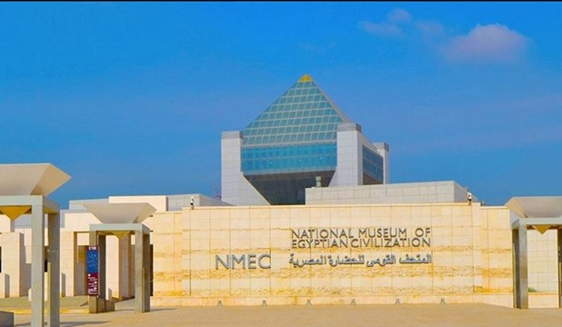
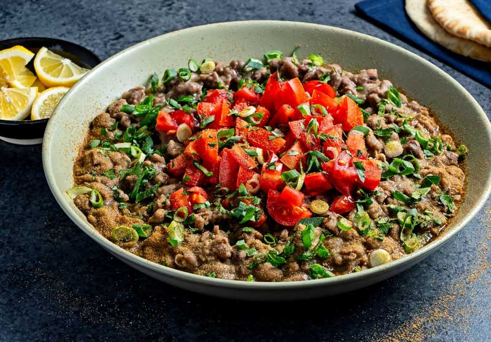
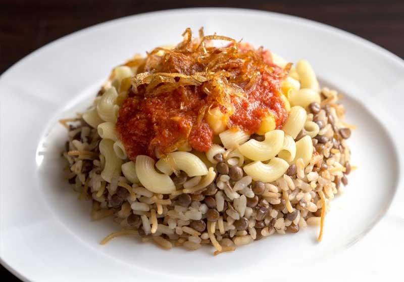
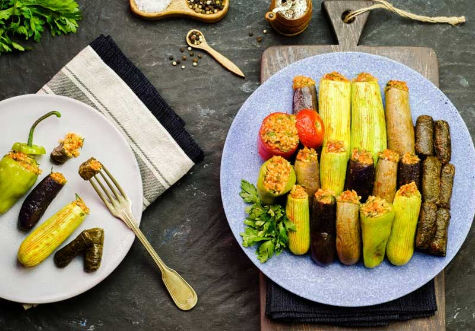
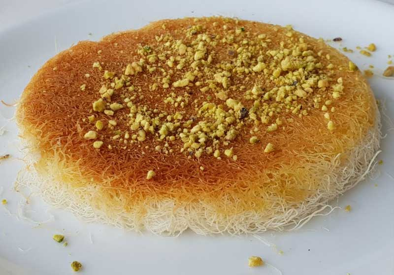

Égypte - Description
L'Égypte est la mère du monde, c'est une destination que les touristes du monde entier visitent, et comprend de nombreuses attractions touristiques et historiques uniques, ainsi que des trésors archéologiques et anciens, qui ont longtemps été la marque de fabrique de l'Égypte, où de nombreux touristes viennent visiter pour découvrir les pyramides et le Sphinx, en plus des vestiges de la civilisation Égyptienne antique, qui reflète l'histoire islamique, copte, romaine, grecque et pharaonique.
Sites à voir
Les pyramides de Gizeh
|  |
Situées sur le plateau de Gizeh, à 18 kilomètres du Caire,
les pyramides sont les monuments les plus visités d’Égypte,
mais aussi les plus anciens du monde. Il s'agit de constructions
funéraires, construites sous les ordres de pharaons de différentes dynasties. Les trois pyramides les plus importantes sont Khéops, Khéphren et Mykérinos. |
Khan El Khalili
|
Khan El Khalili, ou Jan El Jalili, est le plus célèbre marché d'Égypte et du Moyen-Orient.
Son origine remonte à 1382, lorsque le sultan mamelouk Djaharks el-Jalili a décidé de construire
un lieu de repos pour les marchands sur les ruines d'un ancien cimetière fatimide. Vous pouvez acheter des lampes colorées, des tissus, des objets d'artisanat, des bijoux, des épices, des parfums, des instruments de musique et bien sûr des souvenirs et des cadeaux égyptiens. |

|
Musée national de la civilisation égyptienne
|  |
Le musée national de la civilisation égyptienne (NMEC) est un grand musée dans l’ancienne ville de Fostat,
qui fait maintenant partie du Caire, en Égypte. Le musée présente une collection de 50 000 objets, présentant
la civilisation égyptienne de la préhistoire à nos jours. La collection permanente est divisée en deux zones distinctes, l’une chronologique l’autre thématique. |
Sharm el-Sheikh
|
Sharm el-Sheikh est une ville portuaire d’Égypte d’environ 75 000 habitants située à la
pointe sud de la péninsule du Sinaï, sur la Mer Rouge et à l’entrée du Golfe d’Aqaba. Depuis longtemps on y vient pour les superbes plages, les balades dans le désert tout proche et surtout la plongée et le snorkeling qui bénéficient ici d’une réputation mondiale notamment avec le parc national marin Ras Mohammed et ses fonds coralliens aux portes de la ville. |

|
Mets populaires
Le Ful Medames
|  |
C’est probablement le plat national, un stimulant énergétique qu’il faut goûter au moins une fois
(il est généralement consommé au petit-déjeuner). Les fèves (ful) sont l’ingrédient principal du plat. Elles sont cuites dans une cocotte en cuivre avec une sauce à l’ail, après avoir été légèrement écrasées, et servies avec un bon filet d’huile d’olive, du persil, des oignons et du citron. Il n’est pas rare qu’elles soient servies avec du pain pita. |
Koshari
| Un autre plat végétarien préparé avec une grande variété d’ingrédients : pâtes, sauce tomate, riz, oignon caramélisé, ail, lentilles, pois chiches… C’est un mélange curieux et délicieux qu’il faut absolument goûter lors de votre voyage en Égypte. |  |
Mahshi
|  | Un autre plat idéal pour les voyageurs végétariens. Il se compose essentiellement de légumes cuits au four, généralement des poivrons, des courgettes ou des aubergines, farcis de riz mélangé à des herbes aromatiques (persil, coriandre…). Il est accompagné d’une sauce tomate. |
Knafeh
| Voici un dessert qui est recommandé de goûter en Égypte. Le kanefeh est un gâteau composé de nouilles de semoule, semblables à des cheveux d’ange, qui sont roulées et aplaties et cuites à feu doux avec du beurre et un fromage crémeux. Une fois prêt, il est trempé dans du sirop et agrémenté de quelques noix moulues. |  |